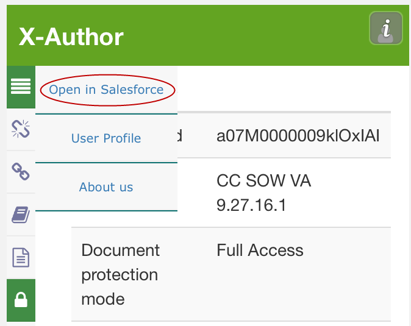
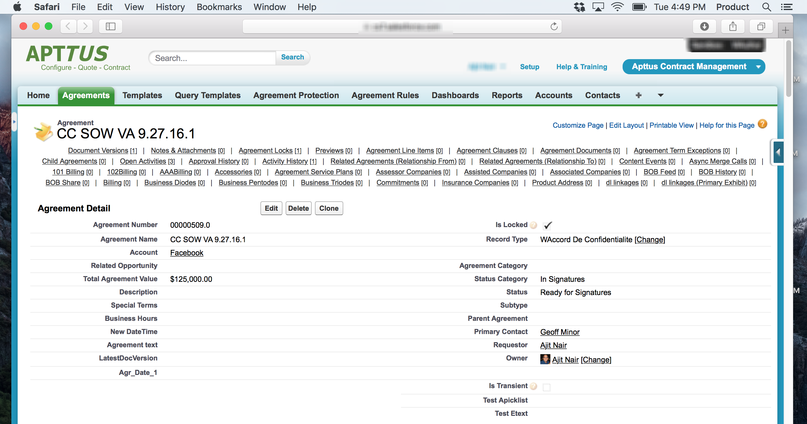

Opening Agreements in Salesforce
You can easily view the Agreement record associated with your document by choosing "Open in Salesforce" from X-Author.
To open an agreement in Salesforce
-
From the X-Author menu, hover over the
 icon and
click Open in Salesforce.
icon and
click Open in Salesforce.

A separate browser window is opened and the agreement is loaded in Salesforce (you may have to log in again).
